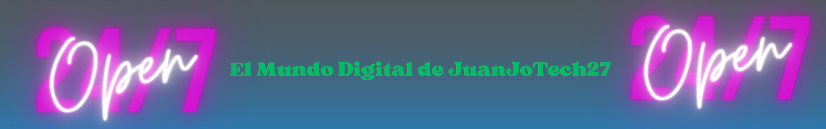
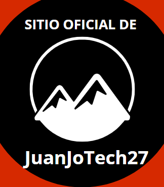

Inicio de la Wiki
El Patito De La Bienvenida, Presenta... 😹
Conoce a Juan José - CEO y Desarrollador
Mi nombre es Juan José, tengo 14 años y soy el CEO de una empresa dedicada al mundo de Minecraft. Desde una temprana edad, me apasiona el desarrollo y la creación de servidores de Minecraft, y a lo largo de los años, he convertido esa pasión en mi profesión.
Mi servidor se especializa en la venta y configuración de servidores de Minecraft, brindando a nuestros clientes una experiencia de juego excepcional. Trabajamos arduamente para ofrecer soluciones de alta calidad y personalizadas para comunidades de Minecraft de todas partes. Con un enfoque en la innovación y la creatividad, he aprendido a adaptarme a las cambiantes demandas del mercado de Minecraft. Estoy comprometido a proporcionar servicios excepcionales y a seguir aprendiendo y creciendo en esta industria apasionante.
Biografía de Juan José - Programador y Diseñador Web
¡Hola! Mi nombre es Juan José y tengo 14 años. Desde temprana edad, he estado inmerso en el emocionante mundo de la programación y el diseño web. Mi pasión por la tecnología y la creatividad me llevó a explorar diferentes aspectos de la informática, y rápidamente me convertí en un apasionado desarrollador de servidores y diseñador de sitios web HTML. Mi amor por la programación me ha llevado a aprender y crecer constantemente en este campo en constante evolución. Me enorgullece ser capaz de crear soluciones únicas y personalizadas para comunidades de Minecraft y otros proyectos en línea. Siempre busco superar desafíos técnicos y crear experiencias digitales excepcionales. Cuando no estoy inmerso en líneas de código o diseñando páginas web, me encanta explorar nuevas tecnologías, aprender sobre las últimas tendencias en diseño y mantenerme al día con las últimas novedades en el mundo de la informática. Creo que la tecnología tiene el poder de cambiar el mundo y estoy emocionado de ser parte de esa transformación. Gracias por visitar mi página web. Espero que encuentres inspiración y soluciones a tus necesidades tecnológicas. Siempre estoy dispuesto a colaborar en proyectos emocionantes y a aprender junto a otros apasionados de la tecnología.
¡Bienvenido a mi mundo digital! 💾
¡Banner Oficial!
Este es un banner que diseñe para darle una tematica mas animada al sitio.
¡Logo Oficial Del Sitio!
Bueno, este es el logo oficial de sitio puede que mas adelante se actualize mediante el tiempo y demas.
________________________________________________________________________________________
¡Este Sitio se actualiza semanalmente!
Oye, tu, si tu, el que esta leyendo esto, te vengo a informar que este sitio se actualiza semanalmente, y por el momento estamos actualizando cositas, para mejorar la experiencia del usuario, en este caso estamos es Face Beta, por el momento y contamos con la actualizacion desarrollada por JuanJo de "v1.5.8" y esperamos llegar a la "Upgrade 23.5.7", la mas chebre seria en ese caso, adios!.